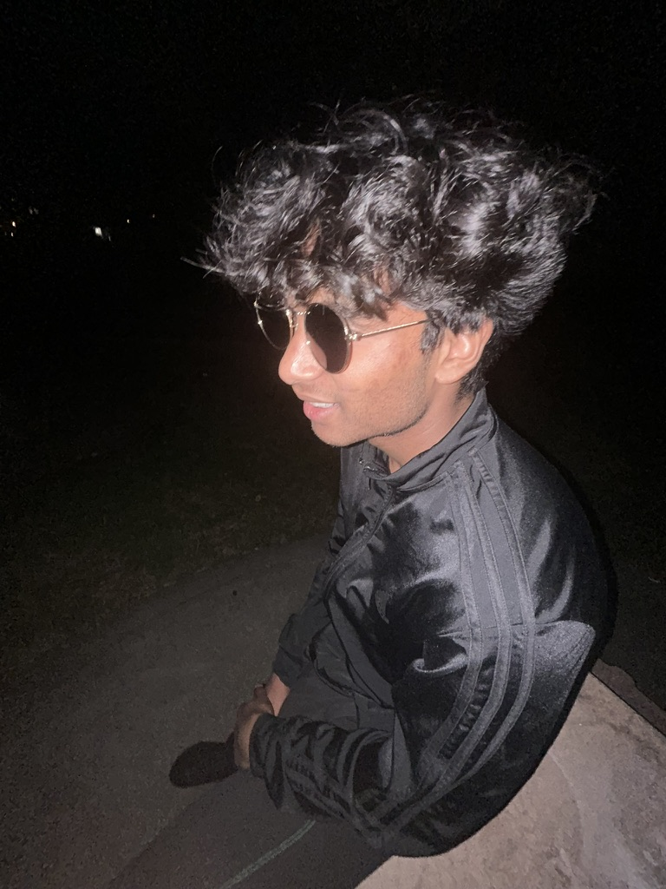

ThinkEx
Building application features, dynamic model routing, and automated CI/CD pipelines.
Software / Systems / AI

Computer engineering student at the University of Maryland. I build software and explore intelligent systems.
GitHub ↗A little life outside the screen.
Building application features, dynamic model routing, and automated CI/CD pipelines.
Exploring deep learning with Prof. Haizhao Yang, with a focus on training stability, model baselines, and reproducing research results.
Working on STM32 telemetry and wheel-speed sensing for an electric race car.
Working with Rust, Docker, NixOS, and KubOS to support reproducible software builds.
Basketball, music, chess, video games, and more.
Always making room for a good game, a new song, or somewhere new to explore.